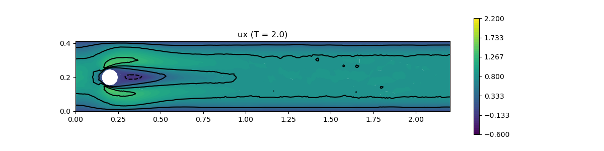
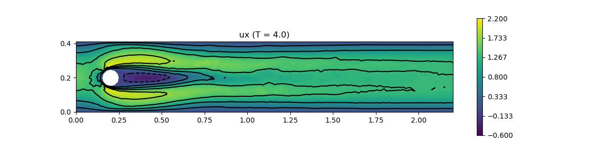
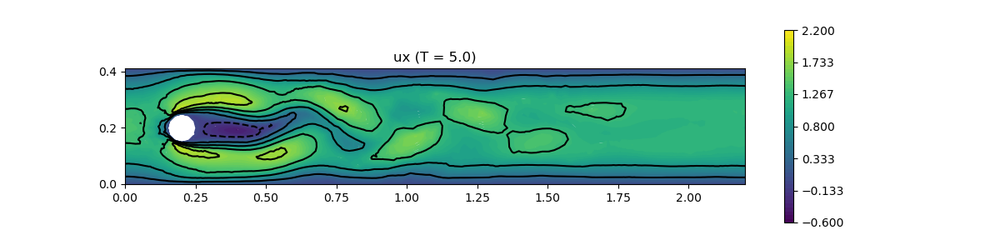
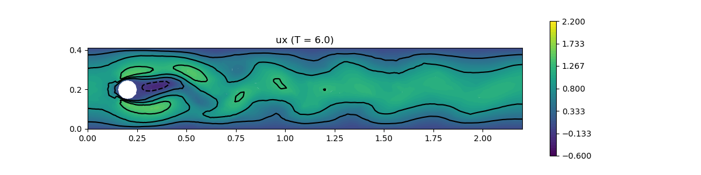

240 : Transient Flow around a cylinder 2D
This example solves the time-dependent DFG Navier-Stokes benchmark problem
\[\begin{aligned} \mathbf{u}_t - \mu \Delta \mathbf{u} + (\mathbf{u} \cdot \nabla) \mathbf{u} + \nabla p & = 0\\ \mathrm{div}(u) & = 0 \end{aligned}\]
on a rectangular 2D domain with a circular obstacle in the time interval [0,8], see here for details.
Note: This example needs the additional packages Triangulate and SimplexGridFactory to generate the mesh.
module Example240_TransientFlowAroundCylinder2D
using GradientRobustMultiPhysics
using Triangulate
using SimplexGridFactory
using GridVisualize
using ExtendableGrids
using Printf
# inlet data for Karman vortex street example
# as in DFG benchmark 2D-3 (Re = 100)
const L, W, H = 0.1, 2.2, 0.41
function bnd_inlet!(result,x,t)
result[1] = 6*x[2]*(H-x[2])/(H*H) * max(sin(pi*t/8),0)
result[2] = 0.0
end
const inflow = DataFunction(bnd_inlet!, [2,2]; name = "u_inflow", dependencies = "XT", quadorder = 2)
# everything is wrapped in a main function
function main(; Plotter = nothing, μ = 1e-3, maxvol = 6e-3, T = [1//1,2//1,3//1,6//1,8//1], timestep = [2//100,1//100,5//1000,2//1000,5//1000], TIR = CrankNicolson, plot_step = 1e-2)
# load grid, finer grid is used for plots
xgrid = make_grid(W,H; n = Int(ceil(sqrt(1/maxvol))), maxvol = maxvol)
xgrid_plot = uniform_refine(xgrid,2; store_parents = true)
nnodes_plot = size(xgrid_plot[Coordinates],2)
# P2-bubble element + reconstruction operator
FETypes = [H1P2B{2,2}, H1P1{1}];
VeloIdentity = ReconstructionIdentity{HDIVBDM2{2}} # div-free reconstruction operator for Identity
# PDE description
Problem = PDEDescription("NSE problem (μ = $μ)")
add_unknown!(Problem; equation_name = "momentum equation", unknown_name = "u")
add_unknown!(Problem; equation_name = "incompressibility constraint", unknown_name = "p", algebraic_constraint = true)
add_operator!(Problem, [1,1], LaplaceOperator(μ; store = true))
add_operator!(Problem, [1,2], LagrangeMultiplier(Divergence))
# the convection operator is assembled to the right-hand side
# to keep the matrix constant in time (but we do subiterations in each timestep)
CO = ConvectionOperator(1, VeloIdentity, 2, 2; testfunction_operator = VeloIdentity, auto_newton = false)
add_rhsdata!(Problem, 1, restrict_operator(CO; fixed_arguments = [1,2], fixed_arguments_ids = [1,1], factor = -1))
# add boundary data (bregion 2 is outflow, 4 is inflow, 5 is cylinder)
add_boundarydata!(Problem, 1, [1,3,5], HomogeneousDirichletBoundary)
add_boundarydata!(Problem, 1, [4], InterpolateDirichletBoundary; data = inflow)
# generate FESpaces and Solution vector and UpscaledSolution vector (for plot on finer grid)
FES = [FESpace{FETypes[1]}(xgrid), FESpace{FETypes[2]}(xgrid; broken = true)]
Solution = FEVector{Float64}(["u_h","p_h"],FES)
UpscaledSolution = FEVector{Float64}(["u_h (fine)", "p_h (fine)"],[FESpace{H1P1{2}}(xgrid_plot),FESpace{H1P1{1}}(xgrid_plot)])
# prepare drag lift calculation by testfunctions
function circle_bnd_testfunction(component) # mask for drag/lift testfunction
function closure!(result,x)
fill!(result,0)
if sqrt((x[1] - 0.2)^2 + (x[2] - 0.2)^2) <= 0.06
result[component] = 1
end
return nothing
end
end
function draglift_kernel(result, input)
# input = [ u, grad(u), p , v , grad(v)]
# [1:2, 3:6, 7 ,8:9, 10:13 ]
result[1] = μ * (input[3]*input[10] + input[4]*input[11] + input[5]*input[12] + input[6]*input[13])
result[1] += (input[1] * input[3] + input[2] * input[4]) * input[8]
result[1] += (input[1] * input[5] + input[2] * input[6]) * input[9]
result[1] -= input[7] * (input[10] + input[13])
result[1] *= -(2/L)
return nothing
end
drag::Float64 = 0
lift::Float64 = 0
draglift_action = Action{Float64}( draglift_kernel, [1,13]; name = "drag/lift by testfunction", dependencies = "", quadorder = 0)
DLIntegrator = ItemIntegrator(Float64,ON_CELLS,[Identity, Gradient, Identity, Identity, Gradient], draglift_action)
# prepare drag/lift calculation
TestFunctionD = FEVector{Float64}("drag testfunction",Solution[1].FES)
TestFunctionL = FEVector{Float64}("lift testfunction",Solution[1].FES)
xBFaceFaces = Solution[1].FES.xgrid[BFaceFaces]
dragtest = DataFunction(circle_bnd_testfunction(1), [2,2]; name = "drag test", dependencies = "X", quadorder = 0)
lifttest = DataFunction(circle_bnd_testfunction(2), [2,2]; name = "lift test", dependencies = "X", quadorder = 0)
interpolate!(TestFunctionD[1], ON_FACES, dragtest; items = xBFaceFaces)
interpolate!(TestFunctionL[1], ON_FACES, lifttest; items = xBFaceFaces)
# prepare viewer
vis=GridVisualizer(Plotter=Plotter, resolution = (1200,300), isolines = 7, flimits = (-0.6,2.2))
# this function is called after each timestep
plot_step_count = Int(ceil(plot_step/timestep[1]))
function do_after_each_timestep(step, statistics)
if step == 0
@printf("| DRAG LIFT")
else
drag = evaluate(DLIntegrator,[Solution[1],Solution[1],Solution[2],TestFunctionD[1],TestFunctionD[1]])
lift = evaluate(DLIntegrator,[Solution[1],Solution[1],Solution[2],TestFunctionL[1],TestFunctionL[1]])
@printf("| %.4e %.4e", drag, lift)
if mod(step,plot_step_count) == 0 && (step > 1) && Plotter !== nothing
interpolate!(UpscaledSolution[1], Solution[1], use_cellparents = true)
scalarplot!(vis, xgrid_plot, view(UpscaledSolution.entries,1:nnodes_plot), Plotter = Plotter, title = "ux (T = $(Float64(TCS.ctime)))")
end
end
end
# solve (after T[j] is reached the timestep is changed)
TCS = TimeControlSolver(Problem, Solution, TIR; timedependent_equations = [1], dt_operator = [VeloIdentity], show_iteration_details = true, maxiterations = 5, skip_update = [-1], target_residual = 1e-8, T_time = eltype(timestep))
for j = 1 : length(T)
plot_step_count = Int(ceil(plot_step/timestep[j]))
advance_until_time!(TCS, timestep[j], T[j]; do_after_each_timestep = do_after_each_timestep)
end
end
# grid generator script using SimplexGridBuilder/Triangulate
function make_grid(W,H; n=20,maxvol=0.1)
builder=SimplexGridBuilder(Generator=Triangulate)
function circlehole!(builder, center, radius; n=20)
points=[point!(builder, center[1]+radius*sin(t),center[2]+radius*cos(t)) for t in range(0,2π,length=n)]
for i=1:n-1
facet!(builder,points[i],points[i+1])
end
facet!(builder,points[end],points[1])
holepoint!(builder,center)
end
p1=point!(builder,0,0)
p2=point!(builder,W,0)
p3=point!(builder,W,H)
p4=point!(builder,0,H)
# heuristic refinement around cylinder
refine_radius = 0.25
maxrefinefactor = 1//20
function unsuitable(x1,y1,x2,y2,x3,y3,area)
if area>maxvol*min(max(4*maxrefinefactor,abs((x1+x2+x3)/3 - 0.2)),1/maxrefinefactor)
return true
end
dist = sqrt( ( (x1+x2+x3)/3 - 0.2 )^2 + ( (y1+y2+y3)/3 - 0.2)^2) - 0.05
myarea= dist < refine_radius ? maxvol*max(maxrefinefactor,1-(refine_radius - dist)/refine_radius) : maxvol
if area>myarea
return true
else
return false
end
end
facetregion!(builder,1); facet!(builder,p1,p2)
facetregion!(builder,2); facet!(builder,p2,p3)
facetregion!(builder,3); facet!(builder,p3,p4)
facetregion!(builder,4); facet!(builder,p4,p1)
facetregion!(builder,5); circlehole!(builder, (0.2,0.2),0.05,n=n)
simplexgrid(builder,maxvolume=16*maxvol, unsuitable = unsuitable)
end
endThis page was generated using Literate.jl.
   